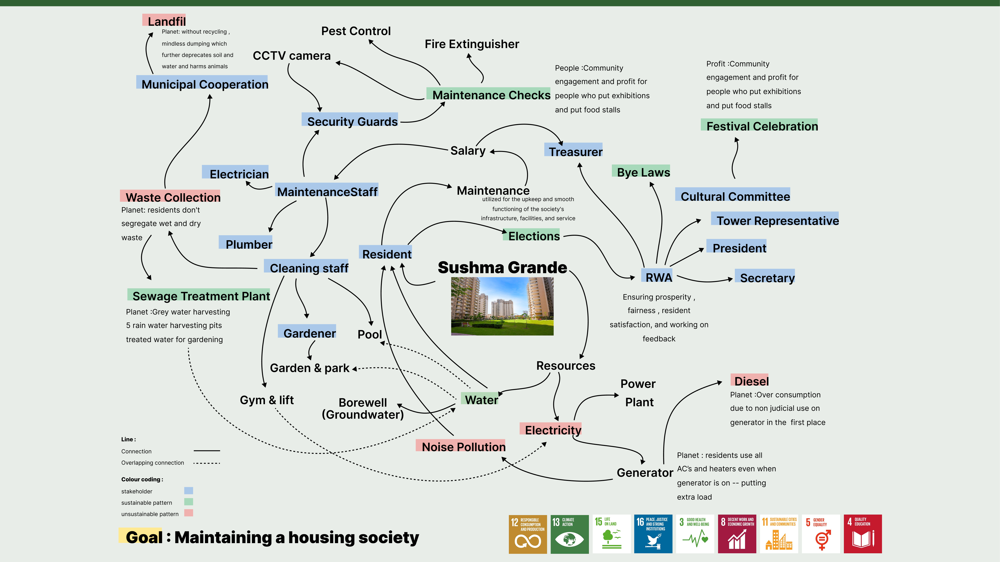
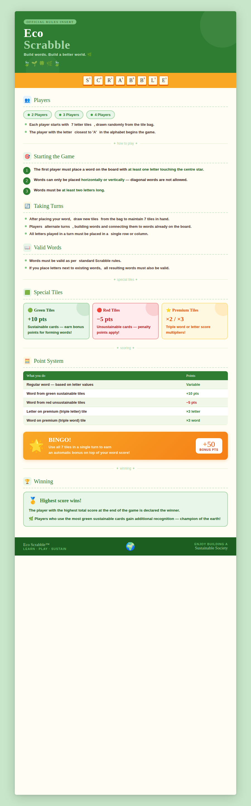

An educational word game that turns sustainability concepts into playful challenges.
Residents in housing societies often struggle to connect daily actions with real sustainability impact across waste, water, and energy systems.
I mapped stakeholders and operational touchpoints to identify where learning breaks down, then translated those insights into a playful game format.

Eco Scrabble is a simple, visual board-game system that makes sustainability concepts easier to understand, discuss, and apply in everyday community life.
